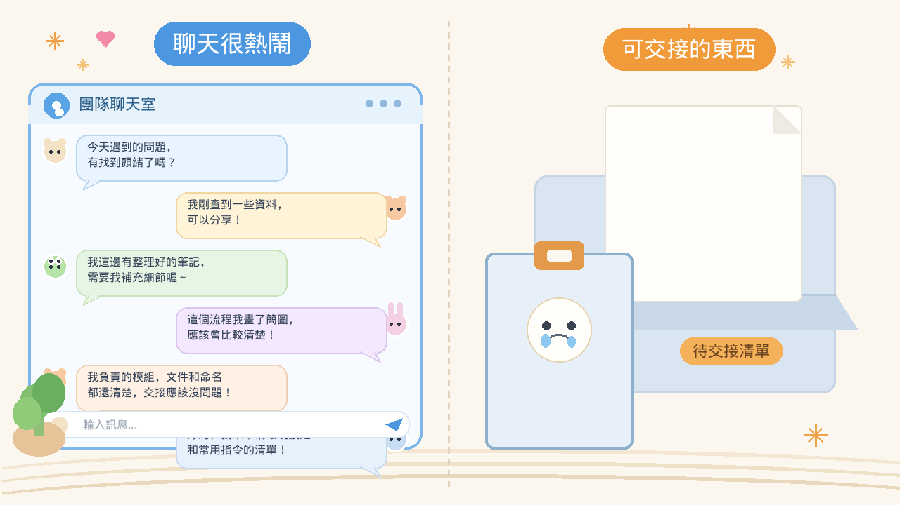
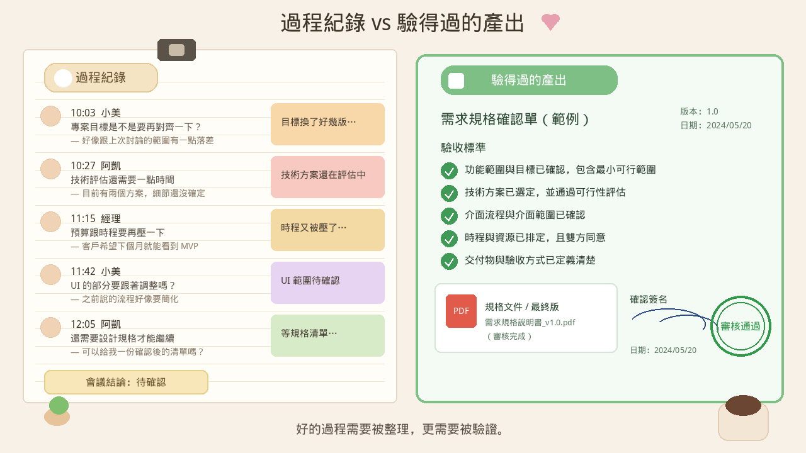
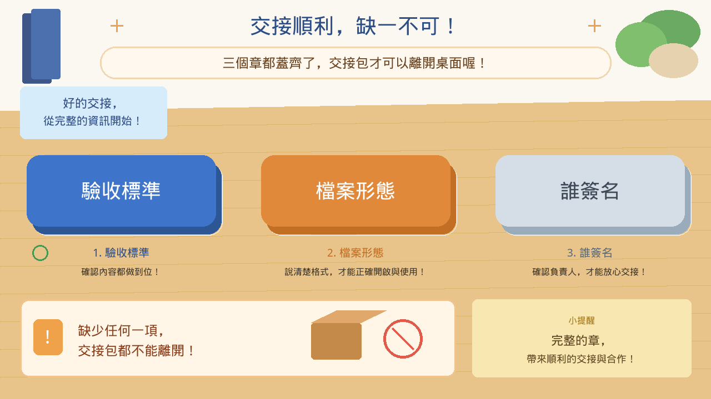

對話很熱鬧，最後卻沒有一份別人接得走、驗得過的產出。聊天視窗裡有共識、有草稿、有「我再整理一下」。下一位同事打開來，看到的仍是一段還沒落地的過程。
閱讀說明：本文為編輯依常見工程實務整理的科普短文，非整理自單一節目或供應商白皮書；文中不引用未查核的市場數字或產品保證。
一段聊得很順的對話，會讓人覺得事情有進展。問題被說清楚了，資料有人願意補，流程有人畫了簡圖，負責某個模組的人還擔保「交接起來應該沒問題」。這些句子都發生過。它們證明團隊在動，也證明模型很會接話。
下一位要接手的人需要的是另一種東西。他要打得開一份檔案，對得上「怎樣算做完」，知道這份檔案以哪一種格式放在哪裡，也知道是誰點頭說這版可以往下用。聊天紀錄可以把過程留住。交接桌上看的是那一份產物。
過程感來自來回。產物來自收束。來回越久，越容易把「我們有討論」當成「已經交出去」。模型也很會把「好的，我來整理」說得很有精神。精神留在氣泡裡。下班前仍要有人把檔案存到別人找得到的地方。
三件事常常一起缺席。沒有人先寫怎樣算做完，所以每個人心裡的完成長得不一樣。沒有約定檔案長什麼樣子、放在哪，所以最好的段落還留在對話氣泡裡。沒有人簽名，所以出了差錯時，責任停在「當時是模型這樣回的」。這三項補上，聊天才收得成別人接得走的東西。
會議聊到大家都點頭，散會時桌上只剩紙杯。下一位進門，聽到的是昨天很有共識。共識若沒被裝進一份他打得開的檔案，他就得把整段會議再聽一遍，才能知道自己該從哪裡接手。

插圖：白話科技編輯繪製／AI 輔助，非新聞照片
驗收標準是一組可以核對的句子。它回答「做到哪裡，這次才算完成」。句子要讓另一個人看著產物打勾。語氣順不順、讀起來像不像完成，留在過程裡感受就好。
寫得動的標準通常很具體。必備欄位都在。範例可以照著跑完。檔案用約定的格式打得開。還沒決定的事項被另列，沒有混進已完成的段落。也寫明哪些話不能出現，例如不得自行承諾還沒核對的日期。
「看起來可以」「再潤一下稿」會推動下一輪對話，所以它們在聊天裡很有用。驗收要的是可以打勾的句子。兩個人對同一段回答點頭，仍可能對「還缺什麼」各有一套說法。標準先寫下來，對話才有終點。
先寫標準，也改變你跟模型說話的方式。你把檢查表放在前面：完成時要有這幾項，缺任何一項就還沒做完。模型可以起草。勾選由人對著產物與標準一起做。
檔案形態是格式加上位置。格式讓人知道用什麼打開：一份純文字規格、一張檢查表、一頁差異說明，或一份已匯出的文件。位置讓人不用在聊天紀錄裡翻。路徑要固定，檔名要看得出版本。
對話視窗是一種介面。它會被捲走、被新話題蓋過，也常常綁在某一個人的帳號裡。下一位同事沒有那串對話的權限，或沒有時間從第一則氣泡讀起，這份工作就停在原處。把同一段文字存成約定格式、放進約定路徑，交接才開始。
最小的約定可以很短。這類工作一律寫進哪個資料夾、主檔叫什麼、附檔有哪些。模型若負責起草，輸出也寫進同一條路徑。貼在回覆裡的文字可以當草稿。路徑上的那一份，才是別人接得走的檔案。
形態不清楚時，故障往往很樸素。有人收到一段很完整的說明，存成自己習慣的格式，欄位名稱換了，下一個人的工具打不開。內容還在，交接已經斷了。所以契約裡要寫格式，也要寫路徑，兩項一起留。
簽名是一個具名的人，對一個特定版本說：這版可以讓下一個人接下去。名字可以是負責這項工作的工程師，也可以是這次討論裡被指定收尾的人。重點是事後問得著人。
模型可以起草、列點，也可以依檢查表做一份自評。簽名要由看過產物的人寫下，並附上日期與版本。自評全部打勾之後，仍要有人打開檔案本身看過，再把名字寫上。有了名字，下次問「這版誰點過頭」，答案就在檔案上。
簽名也幫團隊把「還在討論」和「已經交出去」分開。討論中的分歧留在過程紀錄，標成待確認。簽過名的那一版，才進入下一個步驟。兩種文件可以同時存在。交接以簽過名的那份為準。
快遞要離櫃，箱子上要有內容說明、打得開的包裝，以及寄件人的名字。少一個章，這箱就繼續留在桌上。聊天再熱鬧，也代替不了櫃檯要看的那三樣。

插圖：白話科技編輯繪製／AI 輔助，非新聞照片
把一次對話收成交接包，不必先做一套大系統。最小的一份放在同一個檔案裡，五個標題就夠：
這次要交什麼。一句話，讓沒參加對話的人知道這是哪一件工作。怎樣算做完。三到七條可勾選的驗收標準。檔案在哪、什麼格式。路徑、檔名、版本。誰簽名、日期。具名的人，對應這個版本。還沒決定的事。另列。寫進這一欄的，就維持未定；沒寫進已完成段落的，也不要假裝已經定案。
模型很適合依這五欄把對話草稿填進去。人負責刪掉聽起來完整、其實還沒核對的句子，再簽名。包要小，是為了讓它真的會被寫完。一次聊天若想同時交出完整規格、測試計畫和時程，常常每一項都停在「先這樣」。先讓一份小包離得開桌面，其餘項目明寫成下一步。
順序值得固定。先寫「怎樣算做完」，再開始長對話；若對話已經變長，就在下一輪補上這一段，並從那一輪起照著收。終點先在，後面的來回才知道哪些句子要收進檔案，哪些只是過程。
實務上可以這樣做。開聊的第一則，或你自己筆記的最上端，先放檢查表。每輪有新結論，就問這句話能不能對上某一條標準。對得上，就改檔案。對不上，就放進「還沒決定」。對話結束時，檢查表要全數勾完，或明確列出沒勾的原因。
這樣做會讓有些對話變短。變短是因為終點到了。若標準在結束後才補，團隊容易用已經發生的對話，回頭把標準寫成「反正就是這樣」。標準就失去核對的作用，只剩下事後說明。
選一個團隊打得開的位置，當作這類工作的輸出路徑。可以是儲存庫裡的一個資料夾、共用文件裡的一個固定頁，或工單上的一個附件欄。沒參加這次聊天的人，憑路徑就找得到最新一版。
路徑上最好同時放兩樣東西，並且分開。過程紀錄保存對話摘要或會議筆記，標題寫明它是過程。交接包是另一份檔案，標題寫明版本與簽名狀態。過程可以很長。交接包保持可核對。
請模型輸出時，把路徑寫進指示：起草後寫入這個檔案，沿用這幾個標題。若工具暫時寫不進路徑，就由人在同一輪把文字存進去，再在對話裡貼上路徑。留下路徑，下一位就不必重播整段聊天。
爐邊可以聊得很熱鬧，菜名、火候、誰負責哪一步都講過。裝盒、貼上標籤、寫上寄件人，這盒才出得了廚房。下一位拿到的是盒子，裡頭有清單和名字。

插圖：白話科技編輯繪製／AI 輔助，非新聞照片
以下是編輯根據本文延伸的實務建議，不是講者原話，也不是已驗證的研究結論。
輸出契約先寫路徑、格式與必備欄位，再開始長對話。契約放在任務的固定位置：這次主檔放哪、用什麼格式、哪些欄位缺一不可。模型的起草依這份契約走，最好的段落寫進檔案，回覆裡再附上路徑。
驗收檢查表跟產物放在一起，結束時逐項勾。每一條都要讓另一個人看著檔案判斷有或沒有。勾不了的項目留在「還沒決定」，維持未完成的狀態，並寫明還缺什麼。
對話到產物分成兩條路徑。過程摘要可以留在聊天匯出或筆記。可交接的那一份寫入約定路徑，檔名帶版本。除錯時先打開路徑上的檔案，再決定要不要回看對話。
選一個仍停在聊天視窗裡的工作，依五欄最小模板收成一份檔案：這次要交什麼、怎樣算做完、檔案路徑與格式、誰簽名、還沒決定的事。驗收方式：請一位同事只打開這份檔案，指出怎樣算做完、檔案路徑與格式、簽名是誰。三項都指得出來，這份才算本週的交接包；有任一項指不出來，就把它標成未完成。這是初步試驗，用來檢查這條管線走不走得通。
以下是編輯根據本文延伸的實務建議，不是講者原話，也不是已驗證的研究結論。
每次聊天或會議結束前，指定誰簽名。名字要是這次工作裡實際看過產物的人。沒有名字，這次討論就還停在過程，先不要排進下一步。
把「交得出去」定義成團隊看得到的三項：驗收標準、檔案形態、誰簽名。三項寫在同一處。缺任何一項，狀態維持未完成。這個定義用在你帶的討論即可。
要求討論留下一份打得開的檔案，並說好放在哪。過程紀錄可以留，交接以那份檔案為準。下一次有人說「我們上次聊過了」，先請他把路徑與簽名版本指給大家看。
選一次即將結束的討論，結束前當場寫下三個答案：怎樣算做完、檔案放在哪裡以及什麼格式、誰簽名。驗收方式：三個答案出現在同一份團隊看得到的紀錄；答不出來的那一項標成未完成，這次維持未交接。紀錄留在團隊下次討論前找得到的地方。
聊天可以繼續。交接從那一份檔案離開桌面開始。
本文為編輯根據常見工程實務整理的科普短文，非整理自單一節目或供應商白皮書，也不冒充研究結論。文中不引用未查核的市場數字或產品保證。延伸閱讀連回本站姊妹篇，供對照模型換代、流程裡的判斷，以及怎樣核對判斷。